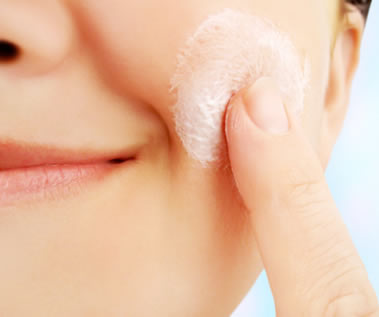

| Medicamentos inovadores compõem 50% de nosso portfólio |
PRODUTOS
A Soul Life possui um portfólio com mais de 100 produtos para diversas especialidades, como Cardiologia, Ginecologia, Dermatologia, Gastroenterologia, Reumatologia, Ortopedia e Pediatria. Com foco em inovação, por meio de pesquisa, desenvolvimento e produção de medicamentos, a Soul Life busca promover saúde e bem-estar a seus pacientes.
VACINA SOUL LIFE & BUTANTAN
A Soul Life em parceiria com o Instituto Butantan produziram a vacina contra o Covid-19 produzida com vírus inativados do novo coronavírus, ou seja, não oferece nenhum risco de infecção pela doença. O vírus é cultivado para se multiplicar e, depois, é inativado por meio de calor ou produto químico. Essa tecnologia é uma especialidade do Butantan e é usada em outras vacinas, como a da gripe.
Medicamentos Genéricos
Para a Soul Life, ter um G estampado no peito tem um significado: GENTE.
Gente que transforma os caminhos da saúde brasileira. Gente que busca em seu tratamento, medicamentos de alta qualidade.

Medicamentos Dermatológicos
Os medicamentos dermatológicos são produzidos em diferentes substâncias, com diferentes princípios ativos. Eles podem ser encontrados para uso por via oral, mas a maioria dos medicamentos dermatológicos são para uso tópico.
Medicamentos Tarjados
São os medicamentos cujo uso requer a prescrição do médico ou dentista e que apresentam, em sua embalagem, tarja (vermelha ou preta) indicativa desta necessidade.
Medicamentos Controlados
Os medicamentos controlados são aqueles fármacos sujeitos a controle especial. Eles são compostos por substâncias com ação no sistema nervoso central, que podem causar dependência física ou química. Alguns são inclusive teratogênicos, ou seja, podem ocasionar a má formação fetal e danos irreversíveis ao futuro bebê.
Medicamentos Antibióticos
Antibióticos são substâncias capazes de eliminar ou impedir a multiplicação de bactérias, por isso são usados no tratamento de infecções bacterianas. Sua descoberta revolucionou a história da medicina, pois anteriormente muitas pessoas morriam em decorrência de diversos tipos de infecções.